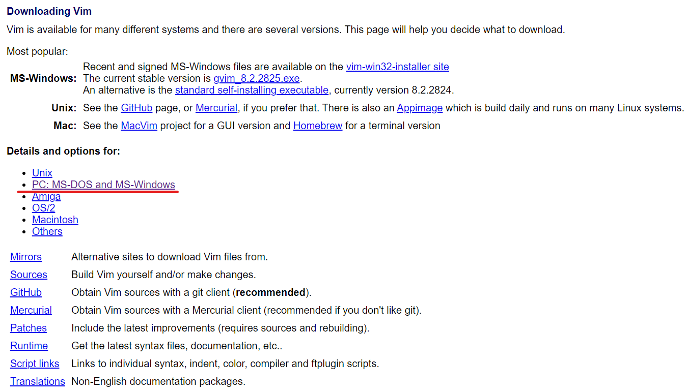
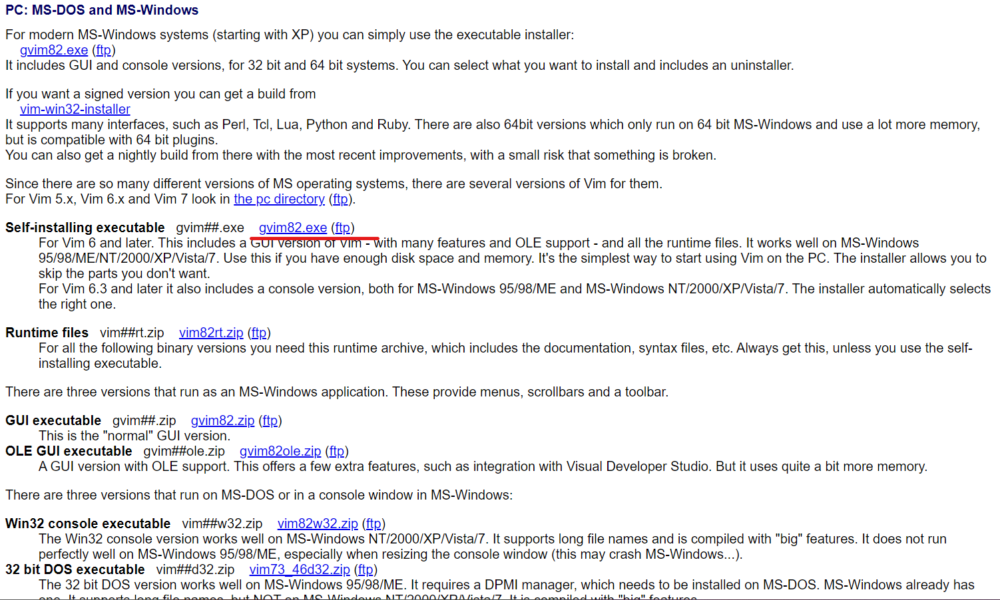
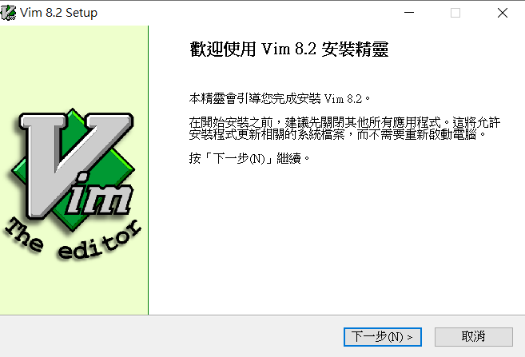
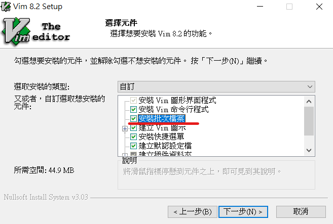
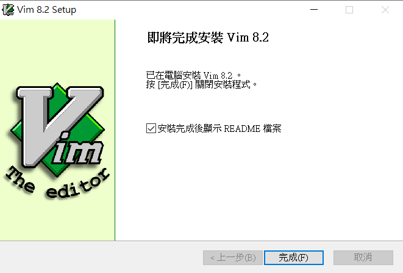
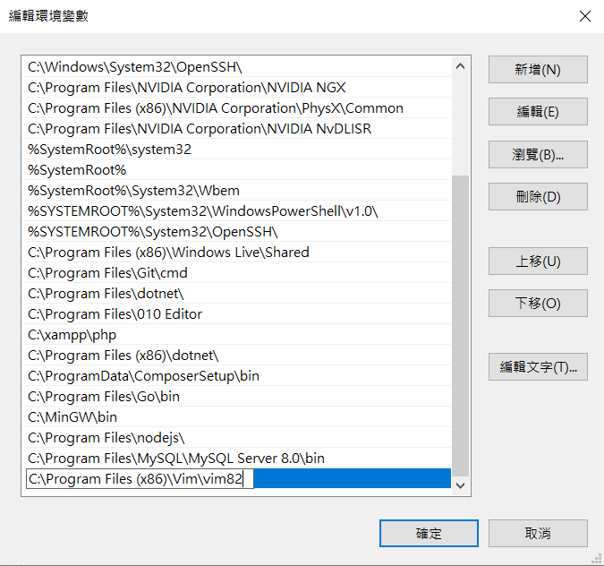
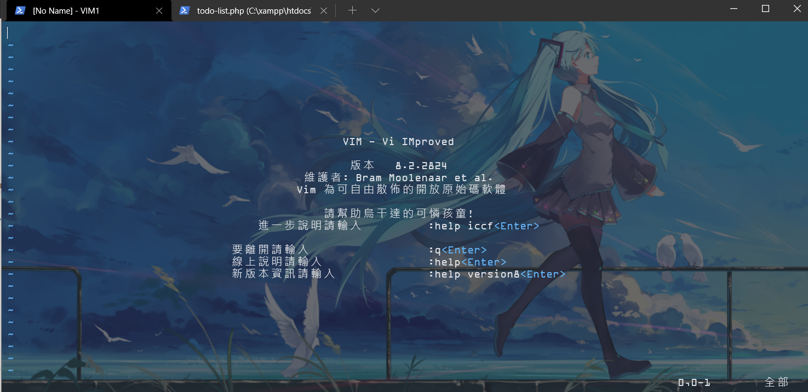
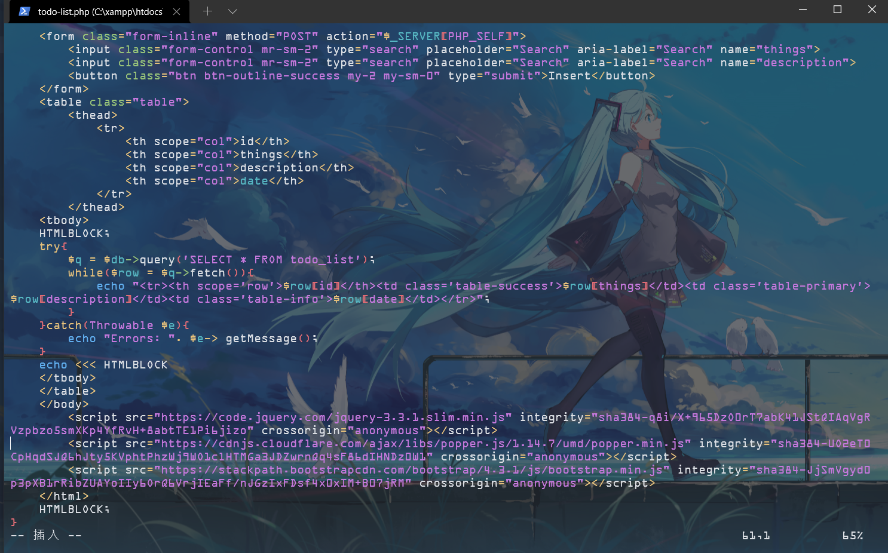

一定會有人希望在Windows上使用vim編輯器吧?那今天就來安裝vim到Windows上吧!
1. 先去官網下載Windows的版本:
https://www.vim.org/download.php


點擊連結下載。
2. 安裝Vim，記得要安裝批次檔案，不然會沒辦法使用文字模式。



3. 再來要設定環境變數，路徑如下:

4. 在powershell或cmd上輸入測試:

可以使用啦!!!
有的時候對於Linux使用者真的使用Vim會方便許多呢~

by.SeaotterMS on 2022/7/12